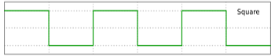

Square (Squ) Module
The square module is a type of oscillator that produces a waveform following a square graph, as shown below:

This module takes 1 input and produces 1 output:
Input is of type integer and defines the frequency of the square oscillator.
Output is the audio channel of the square wave with the given frequency.